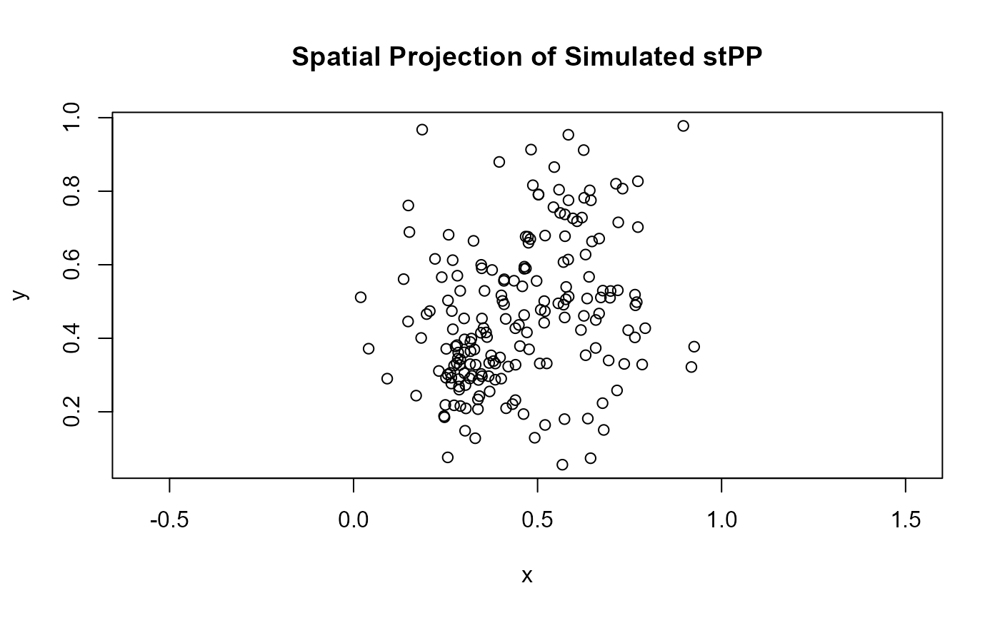
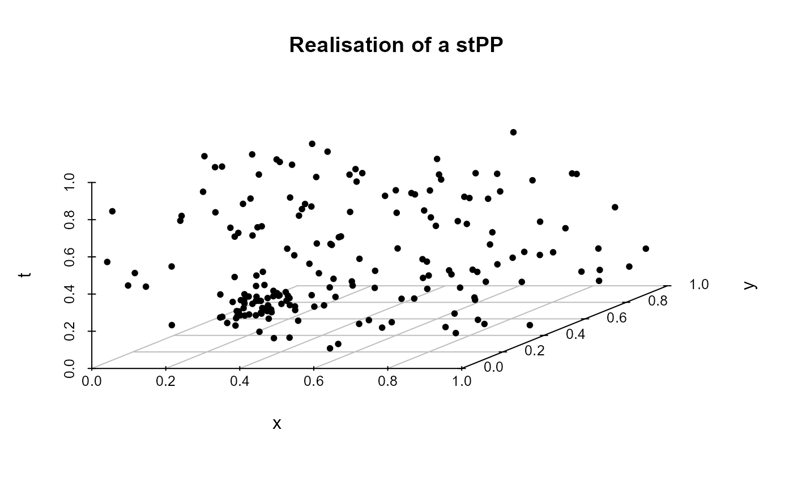

R/Simulate_ST_inhomPois.R
rstpoispp.RdGenerates a realization of an inhomogeneous Poisson point process (STPP) in space and time using the standard thinning method. The user provides an intensity function \(\lambda(u, t)\) and an upper bound \(L_{\max}\) on its value over the observation window. The algorithm first samples candidate events uniformly over space and time and then retains each candidate with probability proportional to its normalized intensity \(\lambda(u,t)/L_{\max}\).
A function of the form lambda(u, t) that returns the intensity value at coordinates (x, y, t).
A numeric value giving the known or estimated maximum of the intensity function lambda over the spatial and temporal window. Used for thinning.
A matrix with two columns giving the polygonal spatial window. Each row is a vertex of the polygon. Default is the unit square.
A numeric vector of length 2 giving the temporal observation window. Default is c(0,1).
A numeric matrix with three columns (x, y, t) representing the retained points from the inhomogeneous Poisson process.
The method implements the classical thinning algorithm for simulating inhomogeneous Poisson processes:
Draw \(N^* \sim \mathrm{Poisson}(L_{\max} \, |W| \, |T|)\), where \(|W|\) and \(|T|\) denote the spatial and temporal window measures.
Generate \(N^*\) candidate points uniformly over \(W \times T\).
Retain each point \((u_i, t_i)\) independently with probability \(p_i = \lambda(u_i, t_i) / L_{\max}\).
The result is a realization of an inhomogeneous STPP with intensity function \(\lambda(u, t)\).
This simulator underpins the spatio-temporal framework introduced in
Ghorbani et al. (2021, 2025) for studying first-order separability.
By selecting appropriate intensity functions (see get.lambda.function),
users can generate fully separable, partially separable, or non-separable
spatio-temporal patterns, enabling direct evaluation of separability tests such as
chi2.test, global.envelope.test, or
dHS.test.
The intensity function \(\lambda(u, t)\) should return non-negative
numeric values and be bounded above by Lmax across the observation domain.
Ghorbani M., Vafaei N., Dvořák J., Myllymäki M. (2021). Testing the first-order separability hypothesis for spatio-temporal point patterns. Computational Statistics & Data Analysis, 161, 107245.
Ghorbani, M., Vafaei, N. and Myllymäki, M. (2025). A kernel-based test for the first-order separability of spatio-temporal point processes, TEST .
get.lambda.function to construct spatio-temporal intensity models;
get.lambda.max to compute intensity maxima;
estimate.st.intensity for intensity estimation;
plot_stpp for visualization.
# \donttest{
# Example 1: Simulate a separable spatio-temporal Poisson process
lambda <- get.lambda.function(N = 200, g = 50, model = 1)
Lmax <- get.lambda.max(N = 200, g = 50, model = 1)
X <- rstpoispp(lambda, Lmax)
head(X)
#> x y t
#> [1,] 0.33727954 0.1991960 0.6703845
#> [2,] 0.34224584 0.4787449 0.4591602
#> [3,] 0.28626638 0.3262656 0.1769381
#> [4,] 0.83344368 0.9645999 0.2161374
#> [5,] 0.25593535 0.4539672 0.9087181
#> [6,] 0.06518888 0.9746086 0.5962528
# Example 2: Non-separable model (Model 4)
lambda <- get.lambda.function(N = 200, g = 50, model = 4)
Lmax <- get.lambda.max(N = 200, g = 50, model = 4)
sim_data <- rstpoispp(lambda, Lmax)
# Spatial projection of simulated events
plot(sim_data[, 1:2], asp = 1, main = "Spatial Projection of Simulated stPP")

# Example 3: 3D visualization using plot_ST_pp()
plot_stpp(X, type = "3D", title="Realisation of a stPP")

# }